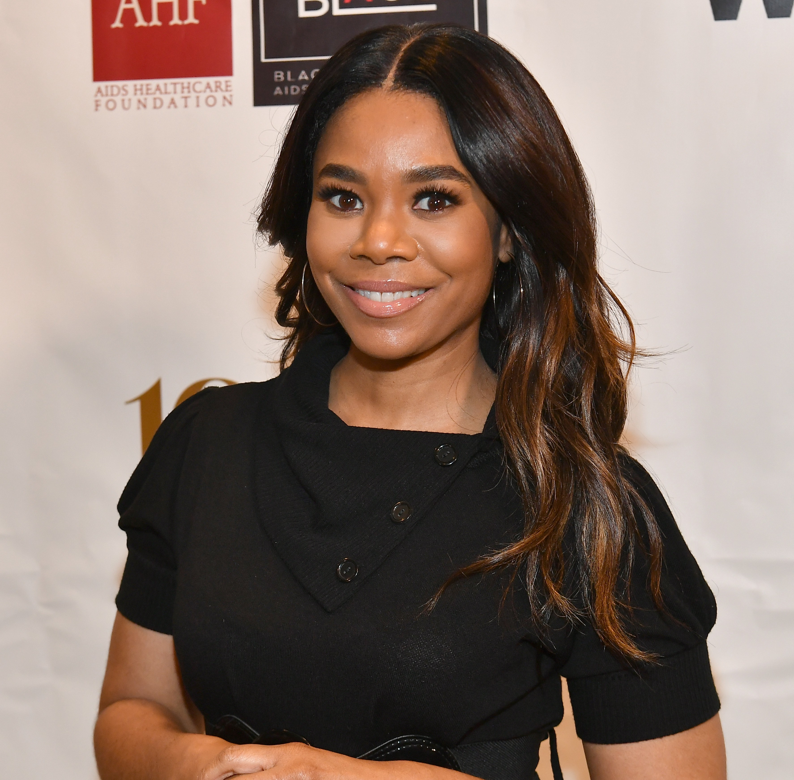
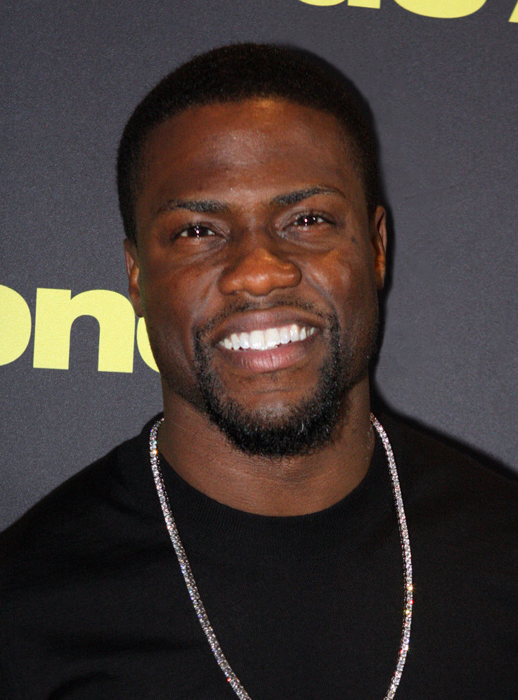

The Cast
Regina Hall aka Candice
Regina Lee Hall is an American actress. She has appeared in several television series,including Ally Mcbeal and Black Monday, Hall was born December 12th 1970 in Washington DC. Hall graduated from Fordham University with a masters degree in Journalism before shifiting in to an acting degree later on. Films: Girls Trip (2017) Little (2019) Shaft (2019) Naked (2017) and Think like a man (2012) where she plays Canadice,one of the protagnists in the film, she is stragetcially partnered with one of the male characters Michael aka "mama's boy". This ironic as Canadice her self has a child and is labeled as a "baby mama". Canadice is a hardworking mother and a good friend.
Information taken from Wikipedia Wikipedia page.
Kevin Hart aka Cedric
Kevin Darnell Hart is an American stand-up comedian, actor, and producer.Born and raised in Philadephia, Pennsylvania. Hart began his career by winning several amatuer comedy competitons at clubs throughout New England, culminating his first stragetcially break in 2001 role on the TV series Undeclared.Other films he has stared in; Ride Along (2014),Get Hard (2015),Night school (2018). Kevin Hart also stars in Think like a man (2012) where he plays Comedian Cedric who is seen as the the leader and confidant of the boy group.
Taraji P Henson aka Lauren
Taraji P Henson is an American actress, who was born 11th September 1970 in Washington DC and has one son named Marcell Johnson.She studied acting at Howard University and began her Hollywood career in guest roles on several television shows before making her breakthrough in Baby boy.She is most known in her roles such as : Hidden Figures (2016), The Karate Kid (2010),Proud Mary (2018), What men Want (2019) and Empire(2015-2020).Taraji has Won several awards including BET award for best actress. One of her most commendable roles is in Think like a man where she plays Independent CEO/Boss lady and is Ironically couples with a 9-5 worker. Taraji Henson shows women as strong and powerful in this film.